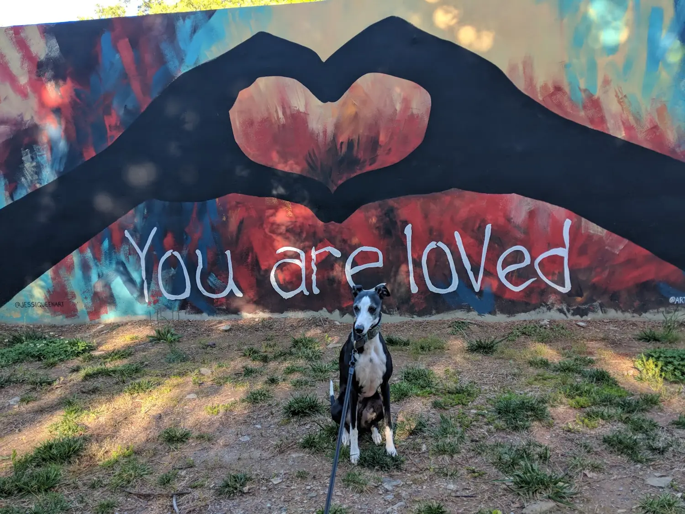
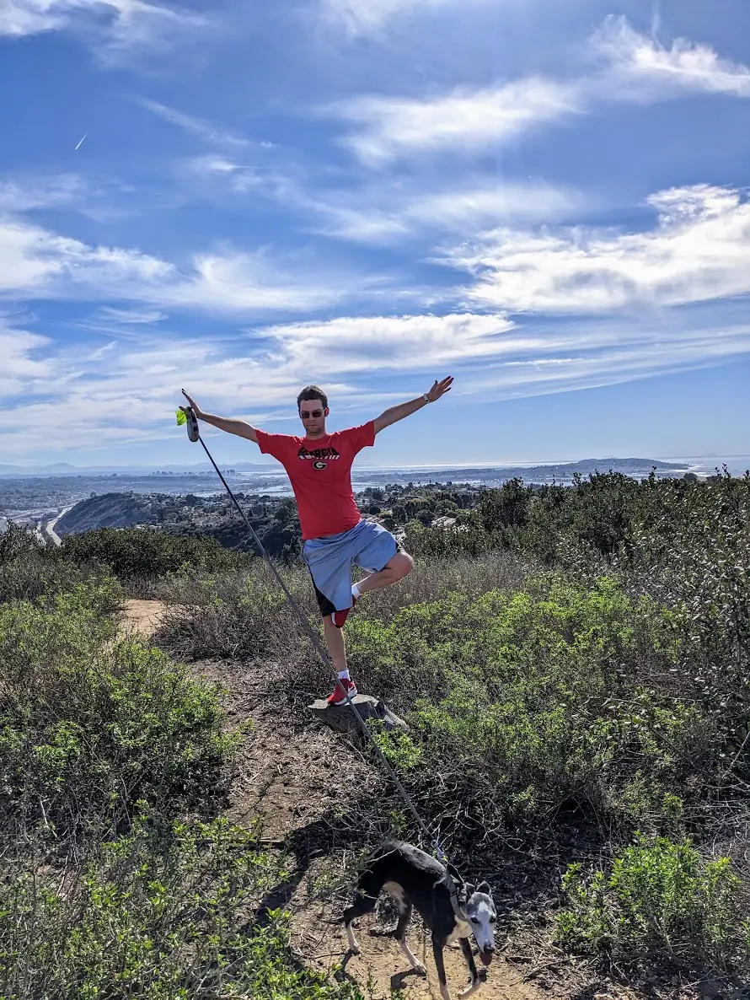
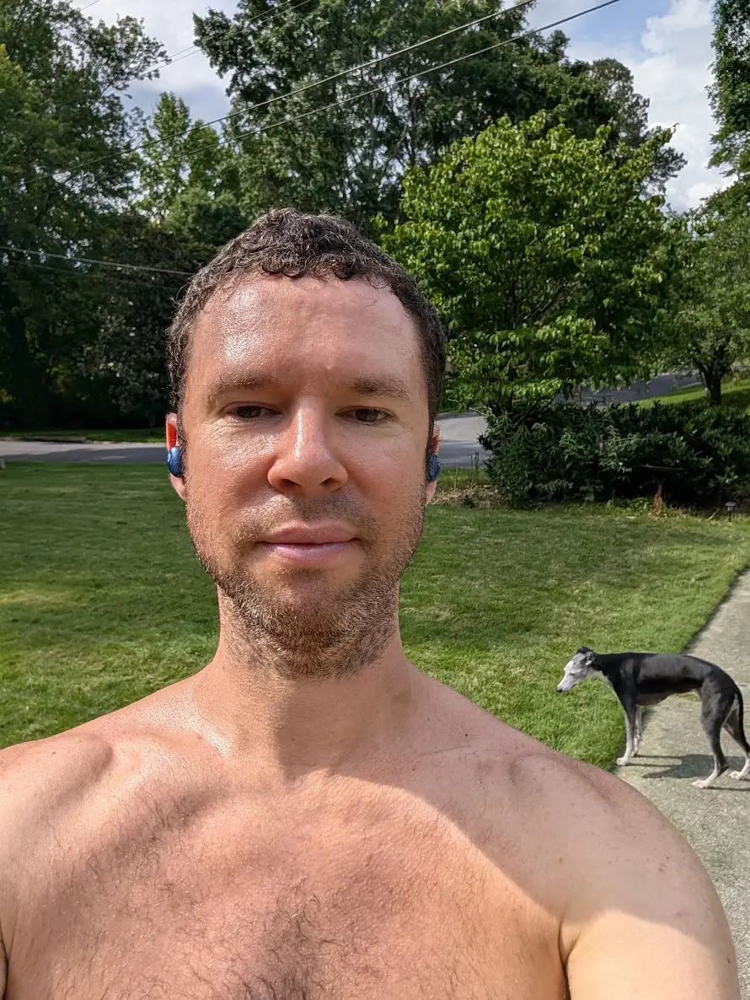
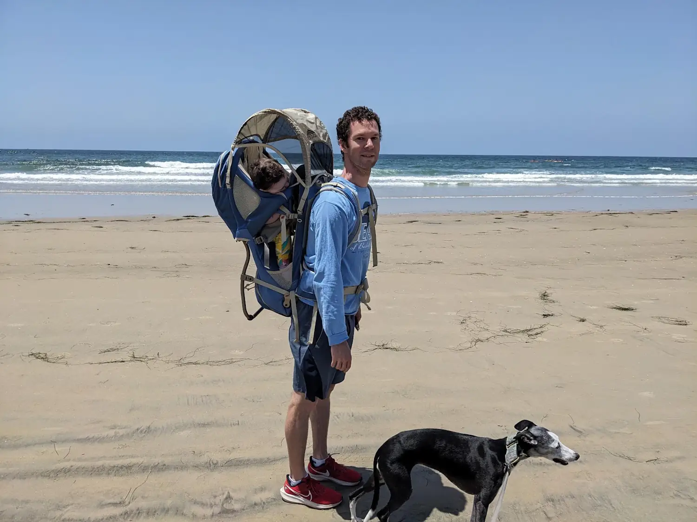
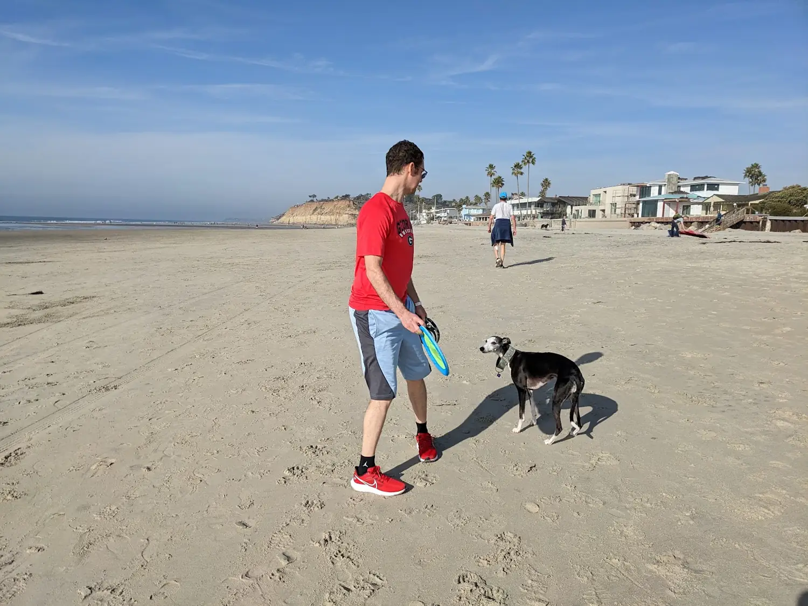
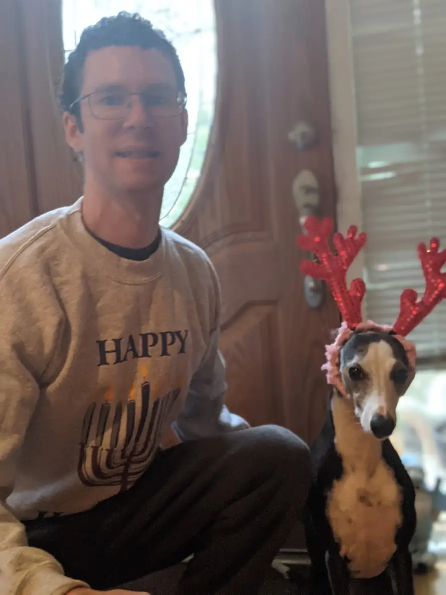

Beyond the desk / Life with a whippet
Meet Ramsey.
Ramsey is my 12-year-old whippet. As of 2026, he has been part of many of my favorite everyday moments—from sunny trails and wide-open beaches to quiet time at home. Here are six photographs of Ramsey and a few of our outings together.

Ramsey's photo gallery
Five more momentsA closer look at life with Ramsey the whippet. Select any photograph to open a larger version.





Thanks for visiting Ramsey's corner of my website. For more photographs, articles and updates, explore my personal photo gallery or return to Nathan (Nate) Brenner's homepage.